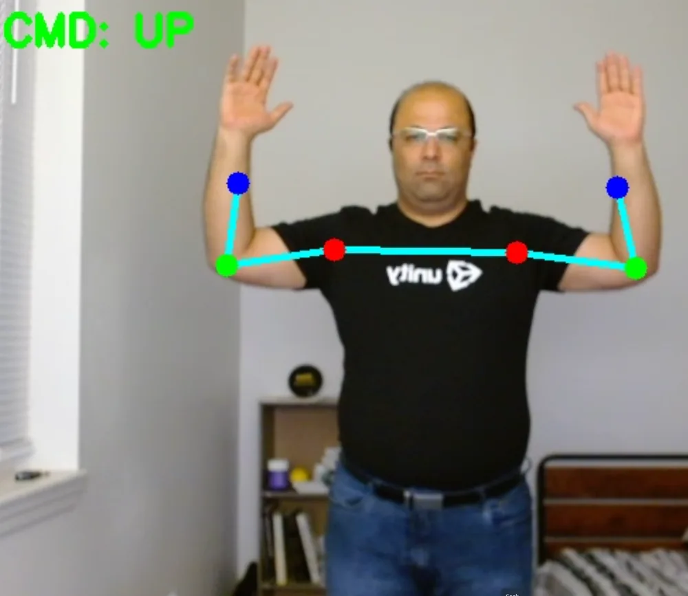
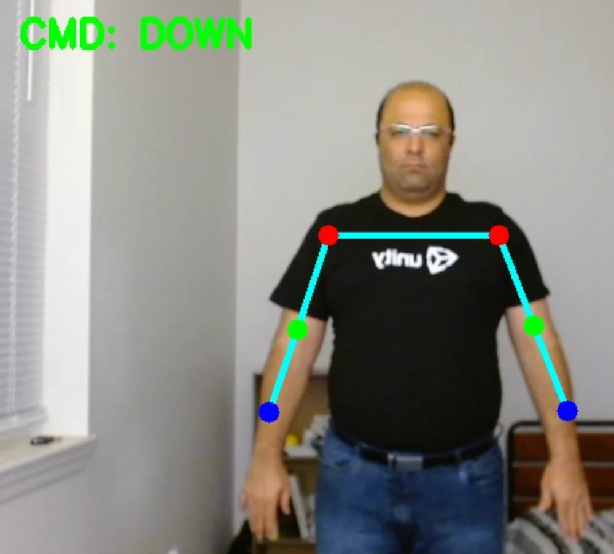
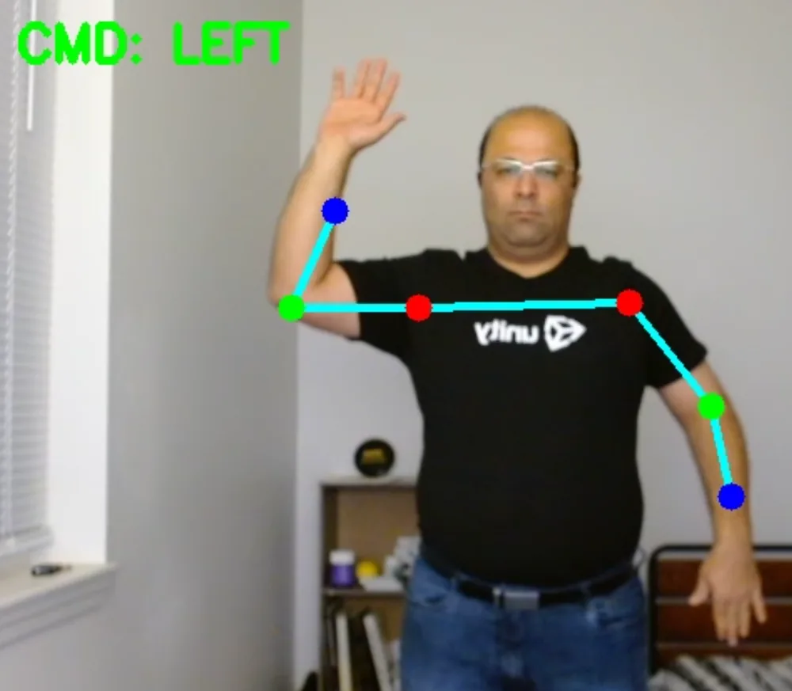
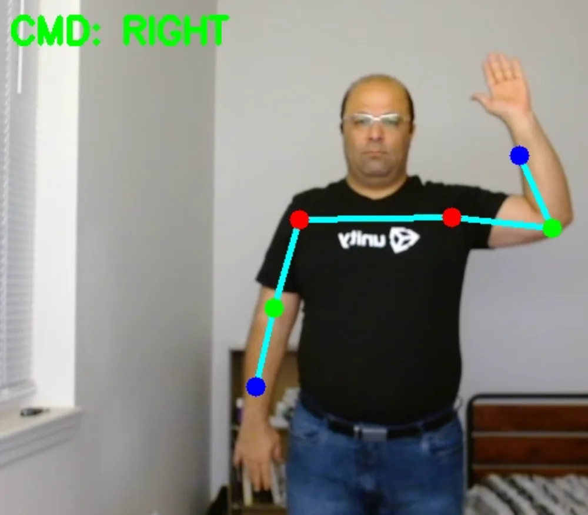
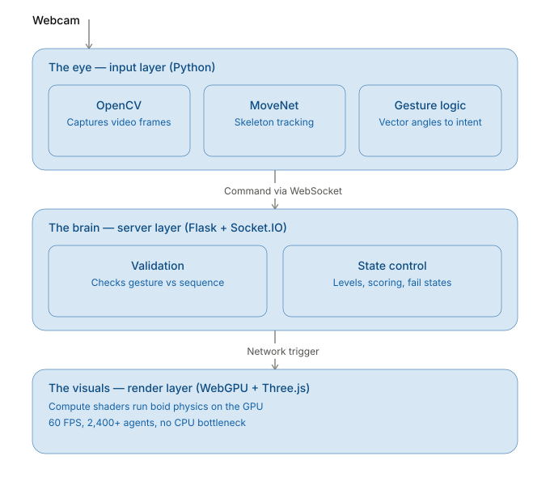

Overview
Interactive Murmuration blends a "Simon Says" memory challenge with a real-time flocking simulation. The system shows you a sequence of glowing target spheres, and you replicate it using body postures captured through your webcam.
The project sits at the intersection of AI, software engineering, cognitive science, art, and math.
Origins
- The spark. Inspired by an interactive museum installation.
- The shift to nature. Witnessing a starling murmuration near home.
- The technology. Motion tracking, boids algorithms, and Three.js.
How It Works
The spatial setup
Four target spheres sit at the cardinal directions (up, down, left, right). Each acts as an attractor for the particle simulation, so the birds swarm toward the active sphere.
The watch phase
The system generates a random sequence of directions. One sphere lights up at a time with a specific musical tone, and you memorize the pattern. Sequences scale from 2 steps (Level 1) up to 8 steps (Level 10).
The physical interaction
Using computer vision, you replicate the sequence with body postures. The webcam view is mirrored, so your movements match the sphere that responds.




| Posture | Command |
|---|---|
| Hands high | Top sphere |
| Hands low | Bottom sphere |
| Left extension | Left sphere (mirrored) |
| Right extension | Right sphere (mirrored) |
Architecture
The system decouples AI input from the simulation across three layers, so heavy vision work never blocks the render loop.

The Eye (input, Python). Captures webcam frames with OpenCV, runs lightweight skeleton tracking through TensorFlow Lite MoveNet, and calculates vector angles to determine intent locally before sending a command.
The Brain (server, Flask + Socket.IO). The authoritative state manager. Gestures arrive over WebSockets and are validated against the active sequence. Level progression, scoring, and fail states are all handled on the backend.
The Visuals (render, WebGPU + Three.js). Compute shaders run boid physics entirely on the GPU, producing a 60 FPS simulation of 2,400 agents that reacts instantly to network triggers with no CPU bottleneck.
Research & Future Directions
Because the game captures how players respond, react, and improve over time, it doubles as a platform for studying attention and working memory, not just a game to play. The same design also lends itself to rehabilitation and cognitive training for older adults.
That foundation opens several directions:
- integrating biometric sensors to deepen the research potential
- turning player movement into generative music
- expanding gestures into full dance-like choreography read from the flock's shape
- adding multiplayer